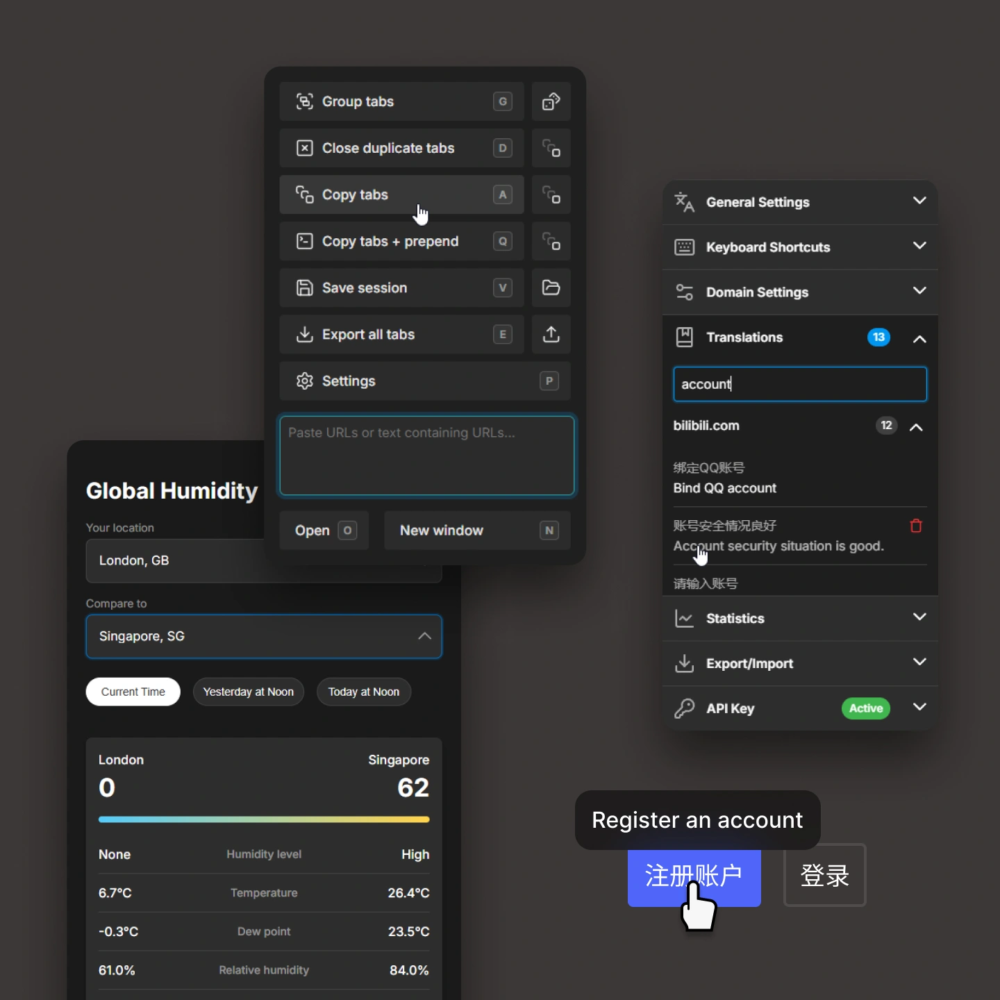
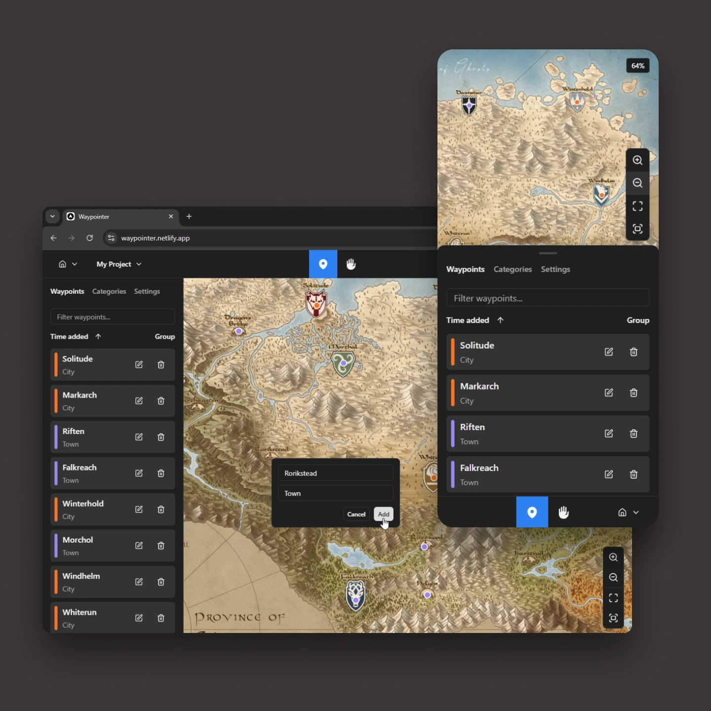

Personal Projects
Recently I've been exploring rapid prototyping and development by leveraging IDEs like Cursor with integrated AI tools to accelerate the creation of small personal projects, turning everyday problems that I've faced into tangible solutions.


Project management
This workflow has expanded my understanding of the project management pipeline and enlightened me to the importance of meticulous documentation and clear requirements. In many ways, it feels like collaborating with a team of developers: each new session with the AI requires getting it back up to speed, so solid readme files, roadmaps, and well-structured product requirement documents are crucial. This approach helps prevent misunderstandings, keeps the AI on track with the project goals, and ensures a smoother development process and a more successful outcome.
By personally guiding the project from start to finish rather than just focusing on UX design I've gained an appreciation for the roles and responsibilities of the entire team process. This experience has enhanced my communication skills and my ability to integrate with different workflows.
Through these personal projects, I ensure that I continue to grow as a designer who not only values creative exploration but also understands the end-to-end product cycle from defining requirements to launching and iterating on real, user-facing solutions as I plan to release these projects to the public and test them with real users.
The process
Although straightforward on the surface, my workflow involves a blend of product management, UX, and rapid development:
Identify the problemStart with a real-world issue that needs solving.
Draft requirementsDefine features and success criteria, using AI to generate early concepts and prototypes.
Design & prototypeDepending on the scale of the project I either hand coded CSS or utilise component libraries like ShadCN and creating final designs for components in Figma to refine visual elements at a later stage for cohesive visuals.
Develop the MVPChoose a suitable and scalable technology stack and tools to scaffold the project from scratch so I can focus on building out features and UX gradually rather than relying on boilerplate code.
Test & iterateConduct user testing with friends and family and gather feedback to refine both functionality and user experience, making incremental improvements over time.
Document & reflectThorough documentation (readme files, roadmaps, user stories) keeps the process organised and sets the stage for future updates.
Key insights
- Holistic skill-buildingManaging the entire project (from planning to coding) offers a 360-degree view of product creation.
- Efficient collaborationAI excels when given clear instructions and consistent documentation; this is similar to good teamwork practices and has helped me to improve my communication skills.
- Continuous learningEach project reveals new design, technical, and communication strategies that I can apply in professional settings.
Projects
UI translator
Overview
- GoalProvide on-demand translation for websites without altering the site's original design.
- InspirationFrustration with full-page translations that break layout and context.
Development highlights
- Hover-based translationHover over text to see its translated equivalent instantly.
- Caching & throttlingPrevented runaway API costs by limiting requests and storing frequent translations.
- Subtle UIA tooltip overlay preserves the native look and feel of the website.
Result & impact
- Language learningRetain the page's native language while translating only words or phrases on demand when needed so the user can learn new languages from exposure, context and reinforcement via unintrusive translations.
- Future roadmapRefine translation accuracy, usability, and performance improvements. Better smart language detection and expanded OCR functionality for images, a domain-specific caching system, and collaborative cloud integration for sharing translations so there's less AI requests needed.
Tab tools
Overview
- GoalEfficiently manage a large number of tabs in Chrome.
- InspirationOther browsers offer advanced tab management, but Chrome's default system felt lacking.
Development highlights
- Incremental feature growthStarted with basic functions (downloading a list of open tab URLs and bulk opening of pasted URLs) and expanded to more complex actions like tab grouping, duplicate closures, saving and restoring sessions, import/export capabilities, page URL extraction and batch-opening along with keyboard shortcuts to name some.
Result & impact
- Greater efficiencyMy workflow and browser usage is less stressful and more efficient now and multiple people have expressed interest in using it themselves.
- Ongoing evolutionNew ideas and incremental updates keep Tab Tools relevant and invaluable to my daily routine.
Conclusion
By harnessing AI for rapid prototyping, embracing meticulous project management, and immersing myself in every stage of development, I've delivered tools like UI translator and Tab tools that meaningfully address some daily challenges. Through these personal ventures, I've not only honed my technical and design skills, but also gained a deeper appreciation for collaboration and clear communication both key in professional environments. I look forward to refining these projects further and continuing to explore new ideas that can make life a bit easier and act as a new way for working in a more efficient way that I can use in professional work as well.